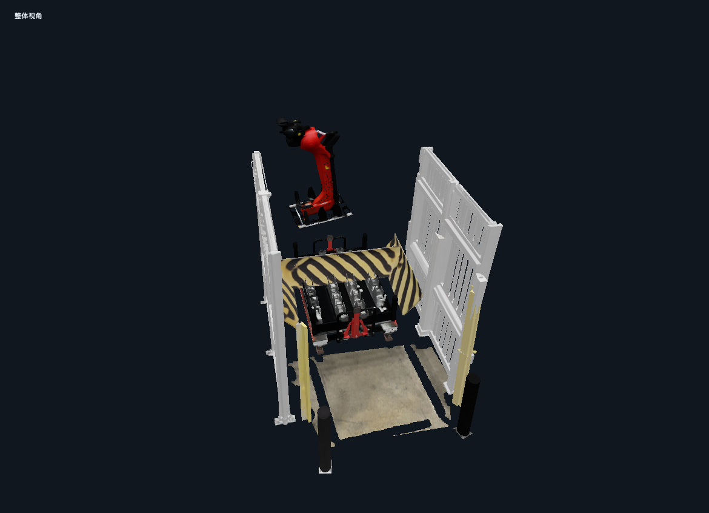
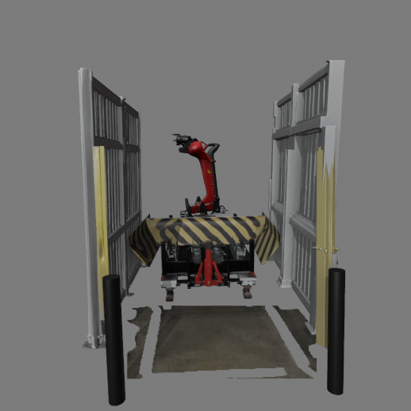

BOR1 00090 / WORKCELL
现场证据，与三维场景一起看。
先进入不同实验场探索工位，再从四联动报告查看对象证据、原检测与实验指标。
INTERACTIVE DEMOS
Playgrounds

SCENE PREVIEW
完整对象重建
Pi3X + RecGen · 9 个生成资产与 1 块观测地面。旋转场景，点选对象，再调整位置、旋转和缩放。
展示的是我们的实际实验产物。照片表面重建来自较早的独立 run；参数化试验仅替换两根柱体。切换实验场前，请下载 JSON 保存编辑。各实验场的编辑不会改写下方报告与指标。各实验场均未标定真实尺寸，也不代表已完成 Lucida 论文复现。参考 Lucida 的 Demo 展示方式 ↗
正在读取冻结的报告与场景数据…
01 / LINKED WORKSPACE
一个对象，四个视角
SELECTED OBJECT
所选对象的逐图对比与对应记录
上面两个平面视图与当前 3D 使用同一套坐标。原检测报告的 CAD 与尺度保留在下方；历史判定未针对新网格或后续编辑重新计算。
02 / INSPECTION EVIDENCE
已有检测报告，保留原始依据
已保存的规则判定
原检测 CAD
原报告坐标全部检测记录
不同拍摄视角可能各有一条记录。只有同照片分割证据确认一致的对象，才关联到新场景。
03 / RECONSTRUCTION & BLENDER
重建改善在哪里，边界在哪里
对象生成与摆放使用固定三张照片。下表以逐视图均值比较同一生成网格摆放前后与输入照片的一致性；深度参照 Pi3X 估计，不能解释为实测尺寸精度。
lucida-replica-01BLENDER / LOW-VLM TRIAL
规则形状，可以由参数生成。
两根防撞柱从现有分割点云拟合半径、高度与位置，再由 Blender 生成可编辑圆柱。拟合脚本新增 VLM 调用 0 次，计算约 1.38 秒；不包含之前的重建、分割及人工准备成本。
右柱轮廓更贴合，但深度误差增加；圆柱也没有底板与螺栓细节。文件保留原场景与参数化试验两个场景，可自行切换检查。
下载可编辑 .blend 63 MB ↗参数来源与逐项对比 ↗
地面、相机和尺寸参数从哪里来？
- 地面朝向与位置
- 照片地面分割 ∩ 人工圈定内部范围 → Pi3X 三维点 → 平面拟合。
- 地面范围
- 照片 3 中可见地面像素三角化，保留空洞，不假定完整厂房边界。
- 相机与对象位置
- Pi3X 联合几何、RecGen 初始摆放，再用多视图轮廓与深度做数值优化。
- 真实米制尺寸
- 尚未标定。需要可靠实测长度或对应拍照相机高度确定整体比例，局部几何仍需核验。
- 质量、摩擦、厚度、关节
- 当前没有输入依据，未设置。